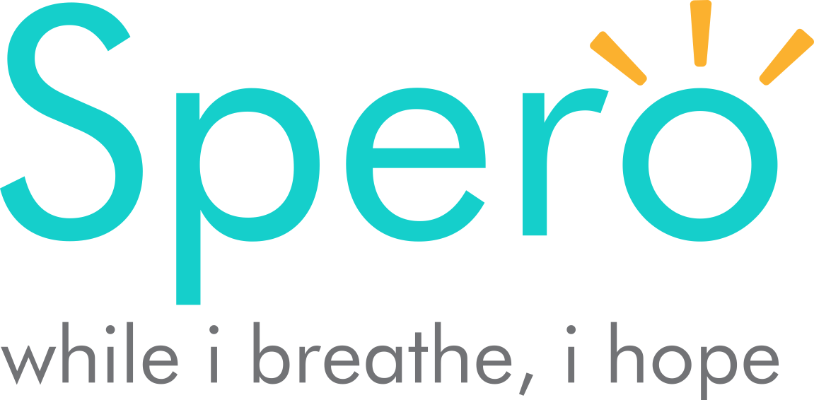

Privacy Policy
Disclaimer
The contents of this web site are provided for informational purposes only. Nothing contained in this web site is intended, or should be construed, as an endorsement or recommendation of any unrelated organization, society or any entity, which may be referenced in this site. Further, nothing is intended to furnish medical advice and opinions on diagnosis, treatment or care of an individual patient and/or a condition, all of which should be discussed with and obtained by consulting a physician. These companies accepts patients for care regardless of age, race, color, national origin, religion, sex, disability, being a qualified disabled veteran, or any other category protected by law, or decisions regarding advanced directives.
OUR COMMITMENT TO YOUR PRIVACY
Our organization is dedicated to maintaining the privacy of your identifiable health information. In conducting our business, we will create records regarding you and the treatment and services we provide to you. We are required by law to maintain the confidentiality of health information that identifies you. We are also required by law to provide you with this notice of our legal duties and privacy practices concerning your identifiable health information. By law, we must follow the terms of the notice of privacy practices that we have in effect at the time.
To summarize, this notice provides you with the following important information:
- How we may use and disclose your identifiable health information.
- Your privacy rights in your identifiable information.
- Our obligations concerning the use and disclosure of your identifiable health information.
The terms of this notice apply to all records containing your identifiable health information that are created or retained by Spero. We reserve the right to revise or amend our notice of privacy practices. Any revision or amendment to this notice will be effective for all your records our organization has created or maintained in the past and for any of your records we may create or maintain in the future. Our organization will post a copy of our current notice in our offices in a prominent location and you may request a copy of our most current notice during any office visit.
WE MAY USE AND DISCLOSE YOUR HEALTH INFORMATION IN THE FOLLOWING WAYS :
- Provision of care. Our organization may use your identifiable health information in order to provide care for you. Many of the people who work for our organization may use or disclose your identifiable health information in order to plan and provide care to you. Additionally, we may disclose your identifiable health information to others who may assist in your care, such as your physician, therapists, spouse, children or parents.
- Payment. Our organization may use and disclose your identifiable health information in order to bill and collect payment for the services and items you may receive from us. We also may use and disclose your identifiable health information to obtain payment from third parties that may be responsible for such costs, such as family members. Also, we may use your identifiable health information to bill you directly for services and items.
- Health Care Operations. Our organization may use and disclose your identifiable health information to operate our business. As examples of the ways in which we may use and disclose your information for our operations, our organization may use your health information to evaluate the quality of care you received from us or to conduct cost-management and business planning activities for our organization.
USE AND DISCLOSURE OF YOUR IDENTIFIABLE HEALTH INFORMATION IN CERTAIN SPECIAL CIRCUMSTANCES.
The following categories describe unique scenarios in which we may use or disclose your identifiable health information:
- Public Health Risks. Our organization may disclose your identifiable health information to public health authorities that are authorized by law to collect information for the purpose of:
- Maintaining vital records, such as births and deaths.
- Reporting child abuse or neglect.
- Preventing or controlling disease, injury or disability.
- Notifying a person regarding potential exposure to a communicable disease.
- Notifying a person regarding a potential risk for spreading or contracting a disease or condition.
- Reporting reactions to drugs or problems with products or devices.
- Health Oversight Activities. Our organization may disclose your identifiable health information to a health oversight agency for activities authorized by law. Oversight activities can include, for example, investigations, inspections, audits, surveys, licensure and disciplinary actions; civil, administrative, and criminal procedures or actions; or other activities necessary for the government to monitor government programs, compliance with civil rights laws and the health care system in general.
- Lawsuits and Similar Proceedings. Our organization may use and disclose your identifiable health information in response to a court or administrative order if you are involved in a lawsuit or similar proceeding. We also may disclose your identifiable health information in response to a discovery request, subpoena or other lawful process by another party involved in the dispute but only if we have made an effort to inform you of the request or to obtain an order protecting the information the party has requested.
- Legal Requirement. We may release identifiable health information if asked to do so by a court official:
- Regarding a crime victim in certain situations, if we are unable to obtain the person’s agreement.
- Concerning a death we believe might have resulted from criminal conduct.
- Regarding criminal conduct at our offices
- In response to a warrant, summons, court order subpoena or similar legal process
- To identify/locate a suspect, material witness, fugitive or missing person.
- In an emergency, to report a crime (including the location or victim(s) of the crime or the description, identity or location of the perpetrator).
- Right to Provide an Authorization for Other Uses and Disclosures. Our organization will obtain your written authorization for uses and disclosures that are not identified by this notice or permitted by applicable law. Any authorization you provide to us regarding the use and disclosure of your identifiable health information may be revoked at any time in writing . After you revoke your authorization, we will no longer use or disclose your identifiable health information for the reasons described in the authorization. Please note, we are required to retain records of your care.